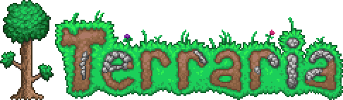
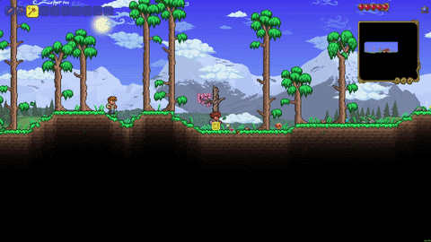
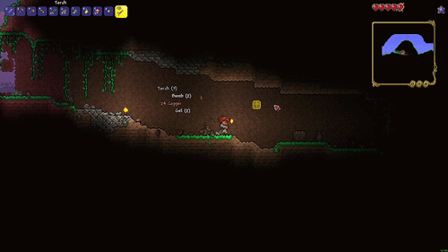
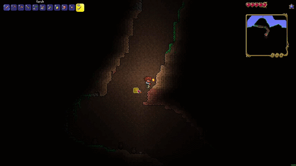

Welcome to terraria! This will be the start of your legendary playthrough and you will have much fun over the course of your whole time playing. If your confused on what to do, chopping down trees with your provided copper axe.

When you've acquired a decent amount of wood, you can explore either left or right in your world and start scavenging to find loot and resources strong to upgrade your tools and armor, especially in caves.

The next step is to find a good cave if you haven't already and go down to mine precious ores upgrade your tools and armor, but be careful! The caves are home to many dangerous enemies.